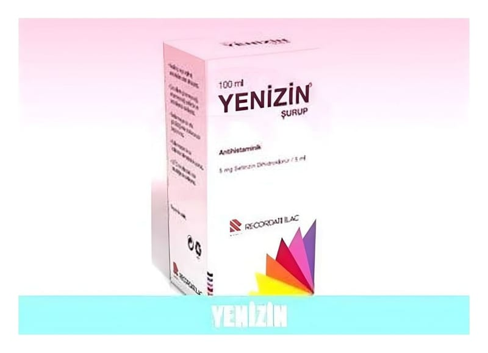

Yenizin 5 mg/5 ml Şurup, 100 ml

Ne için kullanılır
KT · Bölüm 1YENİZİN; renksiz, dağ çileği kokulu berrak bir çözeltidir. YENİZİN 100 mL’lik PE plastik ve pilver proof kapaklı renkli cam şişe, 5 mL’lik 1.25 ve 2.5 mL'ye işaretli kaşık ölçekle beraber sunulur.
YENİZİN alerjik nezle ve kurdeşen tedavisinde kullanılan bir ilaçtır.
YENİZİN; Erişkinler ile 2 yaş ve üzeri çocuklarda; − Alerjik nezlenin burun ve göz ile ilgili belirtilerinin tedavisinde ve ürtikerin (kurdeşen) tedavisinde kullanılır.